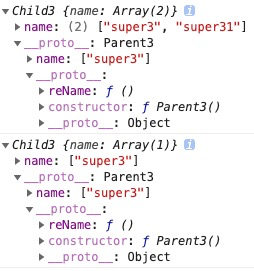

原型和继承
JavaScript对每个创建的对象都会设置一个原型，指向它的原型对象。 如果原型链很长，那么访问一个对象的属性就会因为花更多的时间查找而变得更慢，因此要注意不要把原型链搞得太长。
关系
实例.__proto__ === 构造函数.prototype === 原型
原型.constructor === 构造函数


构造函数
new一个对象具体做了什么
每个new出来的this储存地址都不一样（this1.function !== this2.function）造成空间浪费，所以公用方法放在原型上。每一个实例都能访问到这个方法。
原型继承
对于Class而言，继承的本质是扩展一个已有的Class，并生成新的Subclass。
基于Student扩展出PrimaryStudent，可以先定义出PrimaryStudent：
function PrimaryStudent(props) {
// 调用Student构造函数，绑定this变量:
Student.call(this, props);
this.grade = props.grade || 1;
}
但是，调用了Student构造函数不等于继承了Student，PrimaryStudent创建的对象的原型是：
new PrimaryStudent() ----> PrimaryStudent.prototype ----> Object.prototype ----> null
必须想办法把原型链修改为：
new PrimaryStudent() ----> PrimaryStudent.prototype ----> Student.prototype ----> Object.prototype ----> null
所以加上PrimaryStudent.prototype = new Student()
创建对象的方式
https://baijiahao.baidu.com/s?id=1611119750903121416&wfr=spider&for=pc
工厂模式
缺点：没有解决对象识别问题，即不能知道一个对象的类型。
person1 instanceof Person === false, person1 instanceof Object === true
function createPerson(name,age,job){
var o = new Object();
o.name = name;
o.age = age;
o.job = job;
o.sayName = function(){
alert(this.name);
};
return o;
}
var person1 = createPerson('Nike',29,'teacher');
var person2 = createPerson('Arvin',20,'student');
person1.__proto__ ----> Object.prototype ----> null
person2.__proto__ ----> Object.prototype ----> null
原型模式
缺点：实例相互影响
function Parent1() {
this.name = ['super1']
this.reName = function () {
this.name.push('super111')
}
}
function Child1() {
}
Child1.prototype = new Parent1()
var child11 = new Child1()
var child12 = new Child1()
child11.reName()
console.log(child11.name, child12.name)
// [ 'super1', 'super111' ] [ 'super1', 'super111' ]
child11.__proto__ ----> Child1.prototype ----> Parent1.prototype ----> Object.prototype ----> null
child12.__proto__ ----> Child1.prototype ----> Parent1.prototype ----> Object.prototype ----> null

构造函数模式
缺点：方法不共用，内存浪费
function Child2() {
Parent1.call(this)
}
var child21 = new Child2()
var child22 = new Child2()
child21.reName()
console.log(child21.name, child22.name)
// [ 'super1', 'super111' ] [ 'super1' ], 子实例的属性都是相互独立的
console.log(child21.reName === child22.reName)
// false, 实例方法也是独立的，没有共享同一个方法
child21.__proto__ ----> Child2.prototype ----> Object.prototype ----> null
child22.__proto__ ----> Child2.prototype ----> Object.prototype ----> null

混合构造函数和原型模式
缺点: 父类构造函数被调用两次,子类实例的属性存在两份。造成内存浪费
function Parent3() {
this.name = ['super3']
}
Parent3.prototype.reName = function() {
this.name.push('super31')
}
function Child3() {
Parent3.call(this)
// 生成子类的实例属性(但是不包括父对象的方法)
}
Child3.prototype = new Parent3()
// 继承父类的属性和方法(副作用: 父类的构造函数被调用的多次，且属性也存在两份造成了内存浪费)
var child31 = new Child3()
var child32 = new Child3()
child31.reName()
console.log(child31.name, child32.name)
// [ 'super3', 'super31' ] [ 'super3' ], 子类实例不会相互影响
console.log(child31.reName === child32.reName)
//true, 共享了父类的方法
child31.__proto__ ----> Child3.prototype ----> Parent3.prototype ----> Object.prototype ----> null
child32.__proto__ ----> Child3.prototype ----> Parent3.prototype ----> Object.prototype ----> null

寄生构造函数模式
完美：子类都有各自的实例不会相互影响，且共享了父类的方法
function Parent4() {
this.name = ['super4']
}
Parent4.prototype.reName = function() {
this.name.push('super41')
}
function Child4() {
Parent4.call(this)
// 生成子类的实例属性(但是不包括父对象的方法)
}
Child4.prototype = Object.create(Parent4.prototype)
// 该方法会使用指定的原型对象及其属性去创建一个新的对象
var child41 = new Child4()
var child42 = new Child4()
child41.reName()
console.log(child41.name, child42.name)
//[ 'super4','super41' ] [ 'super4' ], 子类实例不会相互影响
console.log(child41.reName === child42.reName)
//true, 共享了父类的方法
child41.__proto__ ----> Child4.prototype ----> 浅拷贝Parent4.prototype ----> Object.prototype ----> null
child42.__proto__ ----> Child4.prototype ----> 浅拷贝Parent4.prototype ----> Object.prototype ----> null

稳妥构造函数模式
- 没有公共属性
- 不使用this
- 不使用new调用 ``` function Person(name,age,job){ //创建要返回的对象 var o=new Object(); //可以在这里定义私有变量和函数 //添加方法 o.sayName=function(){ alert(name); } //返回对象 return o; }
var friend=Person(“Nicholas”,29,”Software Engineer”); friend.sayName();//”Nicholas”
### 动态原型模式
**使用if语句，使得原型方法只初始化一次**
function Person(name, age) { this.name = name this.age = age
//这里只需要使用任何一个方式或属性，不一定是getName，getAge也可以 //只要保证if里面的代码只执行一次就行 if(typeof this.getName !== ‘function’) { Person.prototype.getName = function() { console.log(this.name) }
Person.prototype.getAge = function() {
console.log(this.age)
} } }
var person = new Person(“AAA”, 23) person.getName() //AAA ```